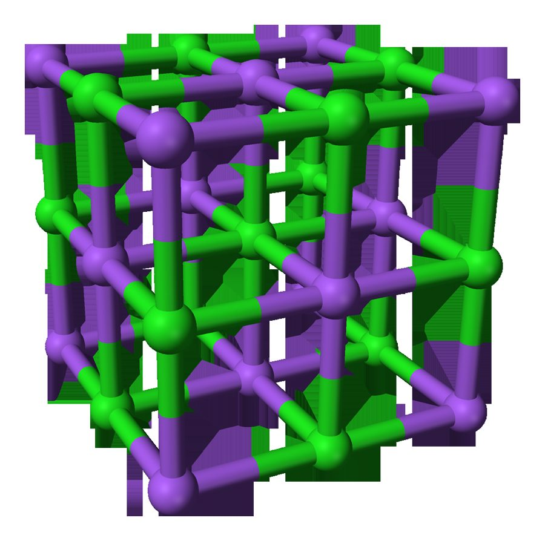
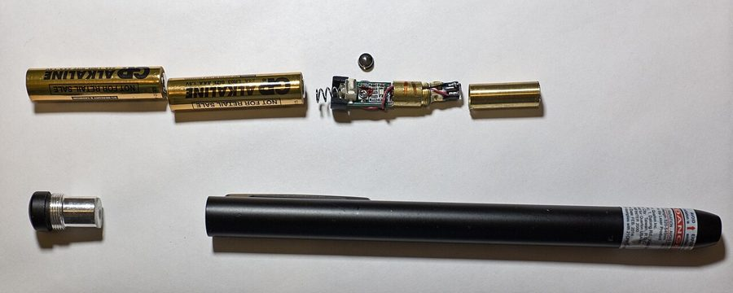
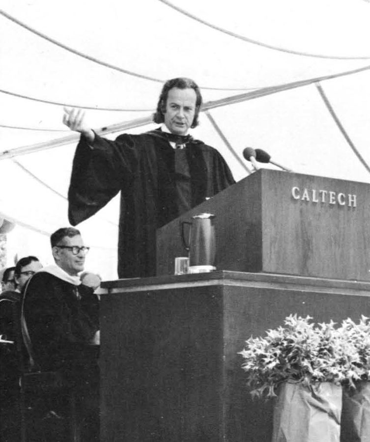

这一章在做什么
作者以为自己得了癌症，想找同样患癌的费曼说说话，被一句「走开」挡在门口。他随口说有个物理问题，再用一句激将的话把门撬开。那个问题倒是真的：他和朋友 Mark 的理论，跟一篇十五年前的旧理论对不上。
读的时候抓两处：门是怎么一步步开的；费曼怎么区分「看懂了」和「自己推得出来」。
门口五句话：费曼从赶人到叫住他
谁
说了什么
费曼想聊的程度
费曼
Go away. 走开
作者
a physics question 有个物理问题（借口）
费曼
Not now … next week 口气软了，还是不见
作者
a long shot 反正你也多年没碰了（激将）
费曼
Wait. 等等，什么问题？
本站示意图。第 7–20 段的对话很短，每一句都在推门。右边的长条是示意，不是书里的数字。
背景：作者默认你知道的事
这一章接着上一章读。先把人和前情对上，再补三件美国读者不用解释的事。
费曼 Richard Feynman 这一年 63 岁，做过两次癌症手术。在办公室沙发上看稿纸，不想被打扰。
海伦 Helen Tuck 真人真名。系里的秘书，办公室挨着费曼，平时替他挡客。
马克·希勒里 Mark Hillery 真人真名，序言里点过。作者读研究生时的好友，在新墨西哥州做量子光学，这一章只在电话那头。
前情：作者以为自己快死了
上一章里，医生摸到肿块，在电话里说这种肿块「总是恶性的」。所以这一章开头的 something in common 指的是：费曼真的有癌症，作者以为自己也有。全章的黑色幽默都从这里来。
support group：病友互助小组
美国很常见的一种聚会：得同一种病、遇到同一种难处的人定期坐成一圈，轮流讲自己的事，互相打气。癌症病人、戒酒的人、丧偶的人都有各自的小组。作者说想和费曼凑一个「两个人的互助小组」，是拿这个说法开玩笑。
系里的信箱
走廊上的三样东西（按书里的描述）
信箱 mailboxes
一人一格（slot），贴着名字
Helen 的门
她站在门口聊天
费曼的门
关着
等 Helen 进屋接电话，快步走过去
本站示意图。书里只说作者在信箱前磨蹭，等 Helen 回屋后从她门前走过；三者之间的距离是示意。
美国大学的系办公室墙上有一排小格子，每个教员、博士后一格，信件和通知塞在里面。作者的格子里只有两份放了很久的广告信，他假装在翻，其实是在等 Helen 走开。
「太应用了」：物理圈里的高低
在当时加州理工的理论物理圈子里，最有面子的是追问自然界基本规律的方向，比如弦理论、量子色动力学。量子光学研究激光和材料，离实验和技术近，会被嫌 too applied 。第 17 章作者瞒着同事写剧本，用的也是 lowbrow 这个词。那位陪他聊天的夜班清洁工（janitor）也是第 17 章出现的。
这一章的物理，先用中文过一遍
光在真空里走得最快，走直线。进了水、玻璃、晶体这类介质 （medium），它会变慢，在界面上拐弯。量子光学（quantum optics）研究光和物质在量子层面怎样相互作用，激光穿过晶体是其中的典型问题。
光进了介质：变慢，拐弯
入射光
法线（垂直于界面的参考线）
上面：真空或空气
折射率 ≈ 1
下面：介质
水的折射率 ≈ 1.33
玻璃 ≈ 1.5
折射后的光
虚线：不拐弯的话
折射率越大，拐得越多
本站示意图。折射率（refractive index）就是书里括号里说的「衡量它让光拐多大弯」的那个数：真空里的光速除以介质里的光速。
折射最常见的样子：铅笔在水面处像是断了。书里拿「一杯水」打比方，说的就是这类宏观性质。
Meganbeckett27，CC BY-SA 3.0，维基共享资源

晶格（crystal lattice）：晶体里的原子排成整齐重复的格子。这是食盐的模型，两种颜色的球是钠离子和氯离子。
Benjah-bmm27，公有领域，维基共享资源
要算「激光穿过晶体会怎样」，有两条路。老办法把晶体当成一整块均匀的东西，只用几个实验测出来的参数描述它，像调用一个只暴露几个配置项的黑盒。作者和 Mark 从一个个原子算起，像把黑盒里的源码重写一遍；原子太多算不动，只好再加一层近似，用的是作者博士论文里的「无穷维」办法。两边都做了近似，所以谁也不天然更对。麻烦在于：两边算出来的结果对不上。
老理论（十五年前）
作者和 Mark 的理论
把晶体看成连续的一整块
把晶体看成一个个原子
近似：只用几个测出来的宏观量
忽略原子这一层细节
近似：无穷维方法
不然原子太多，算不动
结果 A
结果 B
A ≠ B
两边相近，但有一处大的冲突。至少有一边错了。
作者和 Mark 的第一反应：错的是我们
本站示意图。第 22–24 段就是在讲这张图：两条路，各有各的近似，终点不一样。

拆开的绿色激光笔。这类激光笔里，红外激光要先穿过一小块晶体，频率翻倍后才变成绿光。「激光穿过晶体」并不遥远。
Ll1324，CC0，维基共享资源
英文 中文 一句话 quantum optics 量子光学 研究光的量子性质，以及光和物质怎样相互作用。 beam of laser light 激光束 beam 是「一束」。激光方向集中、颜色单一。 material medium 物质介质 光在里面走的那种材料：水、玻璃、晶体。复数是 media。 propagate in a vacuum 在真空中传播 propagate 是波「向前传」。vacuum 是什么都没有的空间。 crystal lattice 晶格 晶体里原子排成的规则格子。 continuous medium 连续介质 不管原子，把材料当成处处均匀、没有颗粒的一整块。 macroscopic / microscopic 宏观的 / 微观的 肉眼和仪器量得到的整体性质，对应原子、分子尺度的细节。书里的 macro-properties 就是宏观性质。 density 密度 单位体积里有多少质量。 viscosity 粘度 液体有多「稠」。蜂蜜的粘度比水大。 refractive index 折射率 光进这种材料后拐多大的弯。 approximation 近似 为了算得动，故意扔掉一部分细节。动词 approximate A as B：把 A 近似当成 B。 infinite dimension 无穷维 作者博士论文的办法：先假装空间有无穷多维，题目反而好算，再修正回三维。 derive 推导 从更基本的出发点一步步算出结论。这一章的关键词。 model / fundamental theory 模型 / 基本理论 模型只管一种具体情形（这块晶体、液氦）；基本理论想管所有情形（量子色动力学、弦理论）。 liquid helium 液氦 费曼 1950 年代研究过它的超流现象，第 8 章提过。
词与短语
词条按在书里出现的顺序排。斜体小字是它所在的那句话里的几个词，方便你在纸质书上找到。
rip
… had a rip at the knee …
（衣服上的）破口
动词是「撕破」。牛仔裤膝盖破了个口子。
be into its third day
… shirt was into its third day. …
已经穿到第三天了
into 表示「进入第几天」。意思是三天没换衬衫，人已经顾不上这些了。
impending
… something in common. Impending death. Maybe …
即将来临的（多指坏事）
Impending death. 两个词单独成句，是作者给 something in common 的答案。
support group
… could form a support group of …
病友互助小组
不是「支持团队」。见上面背景。of two = 只有两个成员。
sort through
… pretended to sort through the two …
一件件翻看、整理
stale
… the two stale items of junk …
放了很久的，过时的
本义是面包、空气「不新鲜」。这里说信在格子里躺了很久。
junk mail
… items of junk mail in the …
广告信，垃圾邮件
这是 1981 年，说的是纸质的。后面的 slot 是信箱的那一格。
a stretch
… name. It was a stretch to …
很勉强，说不过去
stretch 是拉伸。It's a stretch = 这理由扯得太远。两封广告信根本用不着翻那么久。
linger
… a stretch to linger there, but …
逗留，磨蹭着不走
shoo … away
… want Helen shooing me away from …
把……轰走
shoo 本来是赶鸡赶猫时嘴里发的声音。
muffled
… came his muffled voice from inside. …
（隔着门）闷闷的，听不清的
这句是倒装：came his voice = his voice came。
pad of paper
… at a pad of paper he …
一本拍纸簿
pad 是一叠可以一页页撕下来的纸。物理学家拿它演算。
let on
… But if I let on that …
透露，说漏
短语动词，多用于否定或假设：don't let on = 别说出去。
get in
… was personal, I’d never get in. …
进得去（门）
字面意思，但句子省得厉害：I'd = I would，虚拟语气，「那我就别想进门了」。
wasn’t about to
… I certainly wasn’t about to blurt …
绝不会，才不打算
be about to 是「正要」。否定式口语里是「坚决不干」，不是「还没到要做的时候」。
blurt out
… about to blurt out the whole …
脱口而出
不过脑子就把话说出来。后面那句没加引号的话，是他想象中自己会说的。
’cause
… came to chat ’cause we’re both …
because 的口语缩写
撇号表示省掉了 be-。也常写成 cuz、cos。
Try me next week
… don’t know. Try me next week. …
下周再来找我试试
try + 人 = 去找这个人碰碰运气。不是「考考我」。没有答应，只是没把话说死。
wouldn’t do
… Next week wouldn’t do. Next week …
不行，不合适
do 在这里是「够用、行得通」。That will do = 这样就行。
a long shot
… it was a long shot that …
希望渺茫的事
本义是从很远的地方射击，命中率低。作者故意这么说，是激将。
get a position
… had gotten a position in New …
得到一个职位
position 在学术圈就是「工作岗位」。gotten 是美式英语的过去分词。
on and off
… and mine on and off amid …
断断续续地
开一阵、关一阵。也说 off and on。
amid
… on and off amid my study …
在……当中，在……期间
比 during 书面。意思是研究弦理论的间隙里。
janitor
… on nights the janitor was too …
（大楼的）清洁工
第 17 章那位爱聊足球的夜班清洁工。
diversion
… busy to provide a diversion. Like …
消遣，解闷的事
不是「转移」「改道」。清洁工没空陪聊的晚上，他才给 Mark 打电话。
dabble in
… my dabbling in quantum optics was …
随便玩玩，浅尝
不当正业来做。作者故意把自己这份工作说得很轻。
lowbrow
… It’d be considered lowbrow. Too …
低档的，没品位的
brow 是眉毛、额头。反义词 highbrow（高雅的）。It'd = It would。
applied
… considered lowbrow. Too applied. But …
应用性的，偏实用的
和「申请」无关。applied physics = 应用物理，对面是 pure / fundamental。
appreciate
… But Feynman appreciated all aspects of …
懂得欣赏，看得出好处
这里不是「感谢」。意思是物理的哪一块他都看得上。
just about
… As I just about had it …
差不多，几乎
= almost。had it shut 是 have + 宾语 + 过去分词：把门关上。
ploy
… My ploy had worked. Now I …
小计策，花招
come up with
… had to come up with a …
想出，拿出（主意、答案）
这句说明：他进门的那一刻，问题还没想好。
penetrate
… when they penetrate a material such …
穿进，射入
model
… to model the individual atoms inside …
为……建立数学模型
这里是动词。程序员说的「建模」就是这个 model。
be derived from
… it wasn’t derived from a theory …
由……推导出来
这一段 derive 出现四次，有一次还加了引号，表示「真能推出来才算」。
undertaking
… far more complicated undertaking than the …
（费力的）工作，任务
名词。undertake = 承担。
inherently
… neither was inherently a better method. …
本质上，天生地
意思是：两种方法都靠近似，哪个都不是「天然更好」。
sure enough
… was first presented, and sure enough, …
果然，果不其然
不是「足够确定」。表示事情和预料的一样。
figure
… and we figured it was us. …
估计，认定
美式口语里 figure = think。it was us = 出错的是我们。
grasp
… Feynman grasped the idea behind our …
领会，一下子抓住
本义是用手抓牢。
follow
… I followed most of it. …
跟得上，看懂（推导）
follow an argument = 一步步都看得明白。费曼下一句故意按「跟着别人走」来接，是双关。
bullshit
… find that it is bullshit. I …
胡扯，狗屁
粗话，朋友间和口语里很常见，正式场合不用。费曼说话就是这个风格。
be around
… theory has been around for fifteen …
存在，流传
around 不是「在周围」。has been around for … = 已经存在了多久。
get around to
… never did get around to talking …
终于抽出空来做（拖着没做的事）
to 是介词，后面接 -ing。never did 的 did 是强调：始终没有。
talk quantum optics
… we were talking quantum optics, the …
聊量子光学
talk 直接接话题、不加 about，是口语：talk business 、talk politics 。
值得停下来的句子
Just because you are following someone doesn’t mean you are going down the correct path.
— 第 29 段，费曼。本站译：跟着别人走，不等于走的路是对的。
句型是 Just because A doesn’t mean B ：A 成立，推不出 B。口语里很常用，Just because … 整个从句当主语。
作者刚说 followed ，意思是「推导我看得懂」。费曼抓住这个词的字面意思「跟在人后面走」反问回去。他接下来给的标准是：自己能从头推出来，才算懂；到那时也才谈得上信不信。这是全章的要害。

1974 年，费曼在加州理工毕业典礼上致辞。那次讲话的主题是科学上的诚实：头一条是别骗自己。和他在这一章对「懂」的要求是一回事。
作者不详，公有领域，维基共享资源 So not only is it bullshit, it is old bullshit.
— 第 31 段，费曼。本站译：那它不光是胡扯，还是陈年的胡扯。
not only 提到前面，后面主谓要倒装，所以是 is it 而不是 it is；第二个分句照常。
作者拿「这理论都十五年了」当它可靠的证据，费曼把这条证据原样接过去变成了笑话：存在得久，不说明它对。
检查一下理解
先在心里答，再点开。答错的那题，回书里把对应段落再读一遍。
1. 作者在门口说 I have a physics question 的时候，心里有现成的问题吗？
没有。第 9 段他自己承认这不是实话，第 21 段门开了之后他才去想该问什么。不过他拿出来的问题不是编的，是他和 Mark 已经琢磨了两个月的真问题。
2. 费曼说 Try me next week，是约好了下周见吗？
不是。意思是「下周你再来碰碰运气」，前面还有一句 I don't know。这是比 Go away 客气一点的推脱。
3. 作者说 it was a long shot that you could help，是真觉得费曼帮不上吗？
不是，这是激将。他知道费曼喜欢挑战，也受不了别人说物理里有他不懂的东西，所以故意说「你多年没碰这个了」，还慢慢关门。第 21 段的 ploy 指的就是这一招。
4. 「物理世界里没有他给不出最深见解的问题」这句话出现了两次，口气一样吗？
不一样。第 19 段是在说费曼好胜，要向人证明这一点，带点调侃。第 25 段作者用几乎相同的话再说一遍，这回是服气：费曼半小时看到的，比他两个月看到的还多。
5. 两个理论对不上，作者和 Mark 认为是谁错了？费曼呢？
作者和 Mark 默认是自己错了，因为对方是发表了十五年的理论。费曼正相反：他看作者这边每一步都做对了，所以怀疑旧理论有问题。这一章没有给出最后的答案。
6. 两人谈到癌症和死亡了吗？作者为什么还说这是 support group？
一句也没谈。但谈物理的那一阵，作者忘了对癌症的担心，觉得世界有意思。他猜费曼也是这样。所以互助的方式不是倾诉，是一起想问题。